地政学
イスラマバードは中国、インド、アフガニスタン、湾岸、米欧との関係が交差する首都です。官庁、大使館、安全保障機関が近く、山麓の静かな景観の裏で外交と危機管理が動きます。国境政治を映す街です。緊張もあります。
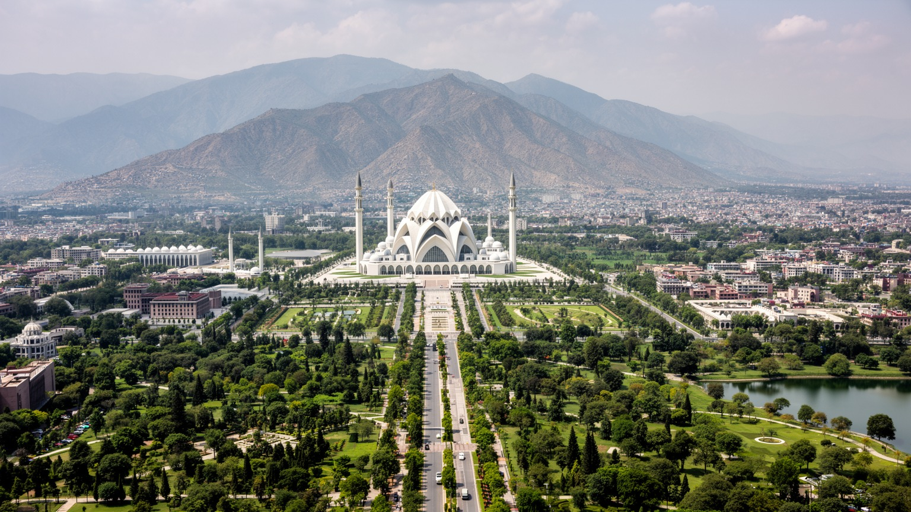
🇵🇰 パキスタン / 首都 / World City Atlas
マルガラ丘陵の麓に造られたパキスタンの計画首都です。官庁、外交団、大学、モスク、公園、住宅セクター、隣接するラーワルピンディーが、国家の制度と日常生活を結びます。
都市の骨格
イスラマバードは商業最大都市ではありません。けれども、国家行政、外交、安全保障、教育、宗教的象徴、自然保護、住宅政策が近い距離で重なり、パキスタンの制度を都市空間として読ませます。
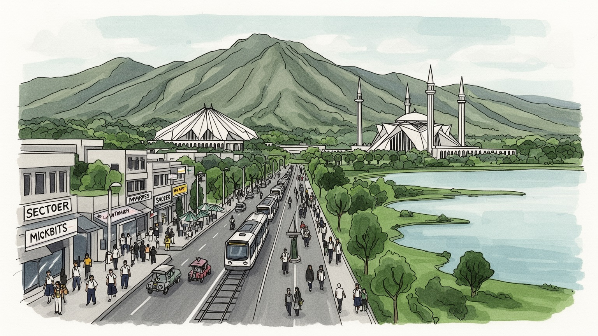
イスラマバードは中国、インド、アフガニスタン、湾岸、米欧との関係が交差する首都です。官庁、大使館、安全保障機関が近く、山麓の静かな景観の裏で外交と危機管理が動きます。国境政治を映す街です。緊張もあります。
行政、外交、建設、通信、IT、教育、医療、警備、非公式サービスが雇用を作ります。ラーワルピンディーとの通勤圏は広く、公務の安定と若者の就職難、住宅費の重さが同じ都市圏に見えます。日々の移動も重いです。
ファイサルモスクは首都の象徴で、金曜礼拝、ラマダン、家族行事が街の時間を整えます。パンジャーブ、パシュトゥーン、カシミール、各地の言葉と食が集まり、計画都市にも多層の暮らしがあります。祝祭も街を変えます。
住民はセクター道路、マーケット、公園、学校、病院、メトロバスを使い分けます。旅行者はマルガラ丘陵、ファイサル・モスク、ロク・ヴィルサ博物館、ラーワル湖を巡り、首都の日常に触れます。湖畔の余暇も魅力です。
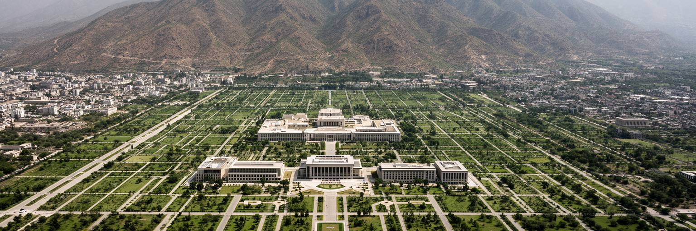
イスラマバードの第一印象は、パキスタンの他の大都市とかなり違います。碁盤状に近いセクター、広い道路、緑地、官庁地区、住宅街区が、マルガラ丘陵の足元に整えられています。カラチやラホールのように商業と歴史が自然に膨張した都市ではなく、独立後の国家が新しい首都として設計した都市です。そのため、街には秩序、距離、余白が多く、同時に計画都市特有の分断もあります。官庁や外交団に近い地区と、通勤者が住む周辺部、非公式集落、ラーワルピンディー側の混雑は、別々の都市のように見えます。丘陵は美しい背景であり、国立公園として都市の気候と余暇を支えますが、斜面開発、道路建設、森林火災、観光圧力も抱えます。首都を読むには、整った大通りだけでなく、セクター間を移動する人、マーケットで働く人、郊外から通う人、丘へ向かう家族の動きを見る必要があります。日中は乾いた風と排気の匂いがあり、夕方には子どもが公園でクリケットを始め、屋台のチャイやケバブの湯気が市場に立ちます。静かな緑と広い道路は魅力ですが、それが誰にとって使いやすい都市なのかを考えることで、計画首都の本当の姿が見えてきます。街区の余白は防災や景観には役立ちますが、徒歩移動には距離を生みます。理想の設計が、日々の通勤や買い物でどう使われるかが重要になります。
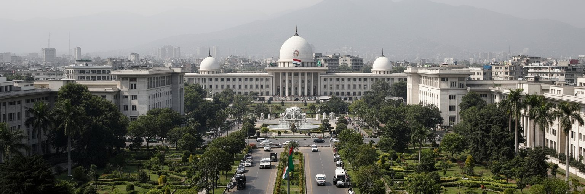
イスラマバードは、パキスタンの国家運営が集まる場所です。議会、最高裁、首相府、各省庁、大使館区域、治安関係機関が近い距離に置かれ、政策、外交、予算、安全保障の判断が都市の日常に影を落とします。パキスタンはインドとの緊張、アフガニスタンとの国境、国内の治安問題、核保有国としての責任、IMFや中国との経済関係を同時に扱う国です。そのため首都の静けさは、政治の軽さではなく、厳しい管理と儀礼の上に成り立っています。抗議行動や政権交代の時には、道路封鎖、警備、通信、集会の規制がすぐに街路へ表れます。行政地区は整然としていますが、住民が求めるのは象徴的な建物だけではありません。物価、電力、教育、医療、洪水対策、雇用、地方への資源配分が、首都の政策として生活へ届くかが問われます。政治性は、記念碑や庁舎だけでなく、許認可を待つ市民、公務員の通勤、警備の検問、裁判所周辺の報道、学生の議論に現れます。テレビ局、ラジオ、新聞、SNSは抗議や判決をすぐに広げ、検問の場所や交通規制もスマートフォンで共有されます。首都の秩序は、管理の強さと公共サービスへの信頼の両方によって保たれています。地方から請願や手続きで訪れる人にとって、首都は遠い権力ではなく、結果を待つ具体的な場所です。その距離感が政治の重さを日常へ近づけます。
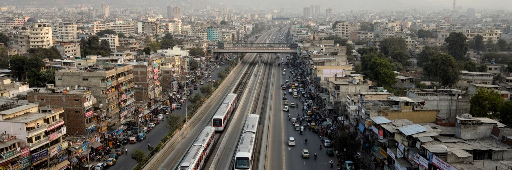
イスラマバードは単独で完結する首都ではありません。すぐ南にラーワルピンディーがあり、二つの都市は通勤、買い物、学校、病院、住宅、軍事、交通によって一体の都市圏を作っています。ラーワルピンディーは古くからの軍都、商業都市、交通結節点で、イスラマバードより密度が高く、雑然とした市場や長い都市史を持ちます。計画首都の整った街路と、隣接都市の生活感ある混雑は対照的ですが、実際には多くの人が毎日境界を越えています。メトロバスや幹線道路は二都市を結び、家賃の差や職場の場所が居住地を決めます。公務員、学生、警備員、販売員、運転手、家事労働者の移動なしに、イスラマバードの機能は成り立ちません。双子都市圏として見ると、首都のきれいなイメージの背後に、より広い労働市場と住宅市場があることが分かります。ラーワルピンディーのラージャ・バザールやサッダルでは、布、靴、携帯部品、屋台料理を扱う小商いが首都の日常を支えます。都市計画がイスラマバード側だけを整えると、混雑、排気、住宅費、公共交通の負担は周辺へ押し出されます。二つの都市を別々に扱うのではなく、同じ生活圏として交通、排水、緑地、学校、医療を考えることが、首都圏の公平性を決めます。朝夕の通勤時間には、その結び付きが道路とバス停に見えます。境界を越える日常こそ、首都圏の実際の形です。
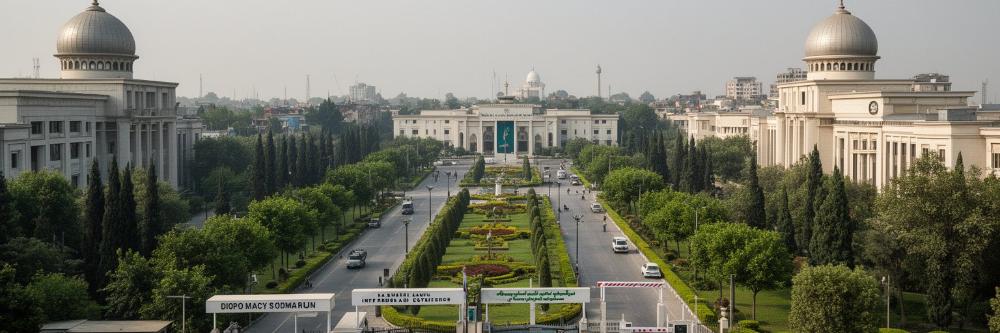
イスラマバードの外交都市としての役割は、パキスタンの地理そのものから生まれます。国は南アジア、中央アジア、中東、中国圏の接点にあり、インド、アフガニスタン、イラン、中国、アラビア海をめぐる難題を同時に抱えます。首都には大使館、国際機関、援助機関、開発金融、報道機関、文化センターが集まり、安全保障、移民、難民、貿易、気候災害、エネルギー、債務、教育協力が扱われます。外交は首脳会談だけでなく、翻訳者、運転手、警備、ホテル、会議運営、研究者、記者、NGO職員の労働によって支えられています。アフガニスタン情勢や中国パキスタン経済回廊、インドとの対話、湾岸出稼ぎ労働者の送金は、遠い話ではなく首都の会議室と家庭の家計を結びます。外交団区域の安全な街路と、郊外の生活条件の距離も、国際関係の現実を示します。援助や投資が道路、学校、電力、洪水対策へどう届くかは、市民にとって外交の成果として見えます。首都の国際性は、英語で交わされる会議だけでなく、多言語の学校、外国料理店、留学生、移民支援の現場にも表れます。夜のホテルやカフェでは、記者、研究者、援助関係者がニュース速報を追い、SNSの短い投稿が会話の糸口になります。落ち着いた会議の積み重ねが、国境や債務をめぐる緊張を少しずつ都市の仕事へ変えていきます。
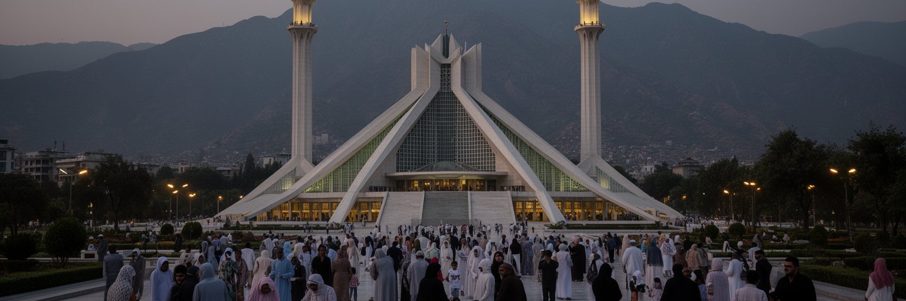
イスラマバードで最も強い視覚的な象徴の一つが、マルガラ丘陵を背にしたファイサル・モスクです。近代的な形を持つ巨大なモスクは、首都のスカイラインに宗教的な重心を与え、パキスタンがイスラム共和国であることを都市空間に示します。けれども信仰は大きな建築だけで語れません。金曜礼拝、ラマダンの断食明け、イードの準備、家庭の祈り、近所の小さなモスク、施し、葬儀、結婚式が、日常の時間を整えています。官庁街の勤務、学校、商店、交通も宗教暦に合わせて速度を変えます。ラマダンの夕方にはサモサやパコラの匂いが市場に広がり、イード前には衣服や菓子を買う家族で店先が混みます。イスラマバードには国内各地から移った人が多く、パンジャーブ系、パシュトゥーン系、カシミール系、ギルギット・バルティスタン出身者、少数派のキリスト教徒や他宗教の人々も暮らします。信仰は共同体を支える力である一方、宗派、ジェンダー、少数派の権利、公共空間の使い方をめぐる緊張も生みます。首都であるため、宗教的な議論はしばしば国家政策や法制度にも接続します。ファイサル・モスクを訪れる旅行者は、その壮大さだけでなく、礼拝へ向かう家族、学生、観光客、警備、周辺の売店が作る日常の厚みを見ることができます。祈りの時間は、計画都市の直線的な街路に別のリズムを与えます。
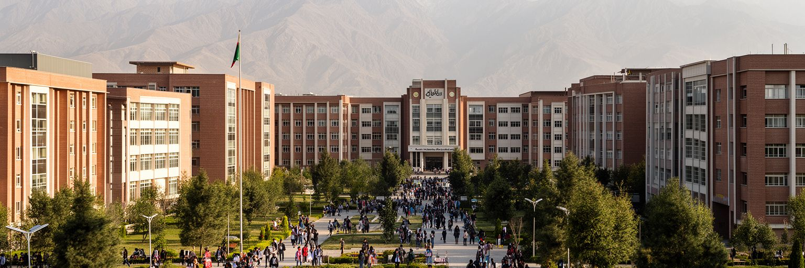
イスラマバードは行政都市であると同時に、大学、研究機関、民間IT企業、通信事業、専門職サービスが集まる知識都市でもあります。国立大学、工学系や社会科学系の教育機関、政策研究所、国際機関に近い職場は、国内各地から学生と若い専門職を引き寄せます。英語、ウルドゥー語、地域言語が混じるキャンパスでは、国家試験、海外留学、起業、フリーランス、公共政策、メディアをめぐる会話が重なります。ITや通信の仕事は、パキスタンの若い人口に新しい機会を与えますが、安定した雇用は十分ではありません。電力、インターネット、資金調達、女性の移動安全、家賃、技能訓練、国際決済の制約が、若者の働き方を左右します。首都にあることは、規制当局や政府案件へ近い利点を生む一方、政治的な不安や通信規制の影響も受けやすいです。カフェや共同作業空間には、政府職を目指す学生、アプリを作る技術者、開発援助の専門家、メディア関係者が同じ時間を過ごします。夜にはギターの小さな演奏会や詩の集まり、オンライン配信があり、勉強だけではない若い文化も育ちます。教育都市としての力は、学位を与えるだけでなく、学んだ若者が社会で働ける通路をどれだけ作れるかで測られます。女性が安心して通学や通勤を続けられる交通と住まいも、知識都市の基礎になりますし、街の将来を広げます。
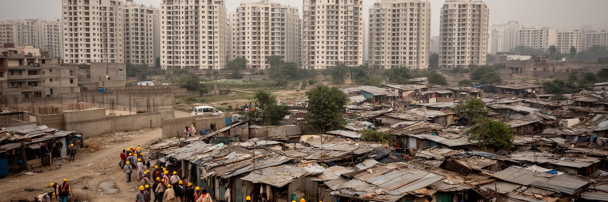
イスラマバードの住宅地は、セクターごとに整えられた計画都市の印象を強く持ちます。広い道路、公園、マーケット、学校、モスクが配置され、中間層や公務員、外交関係者にとっては比較的住みやすい環境があります。しかし人口増加と地価上昇の中で、住宅費は大きな重荷です。中心に近い地区は高く、若い世帯、学生、低所得労働者、地方から来た人は、ラーワルピンディーや周辺部、非公式集落へ住まいを求めます。建設現場、家事労働、警備、清掃、運転、販売に従事する人々が首都の生活を支えますが、その住環境は計画都市の美しいイメージから外れがちです。非公式集落の撤去、土地権利、上下水、電気、学校、宗教少数派の居住は、首都の社会問題として繰り返し浮上します。緑の多い都市を守ることと、低所得者が安全に住める場所を確保することは対立ではなく、同時に扱うべき論点です。住宅の格差は、通勤時間、教育機会、女性の移動、子どもの健康、高齢者の通院にも影響します。公園では子どもが遊び、年長者が夕涼みに集まる一方、家賃の高い地区では使用人や警備員の住まいが遠くなります。計画首都の公平性は、都市を支える労働者にも居場所を用意できるかで測られます。住宅をめぐる政策は、見た目の秩序だけでなく、日々の生活の継続性を守る視点がさらに強く求められます。
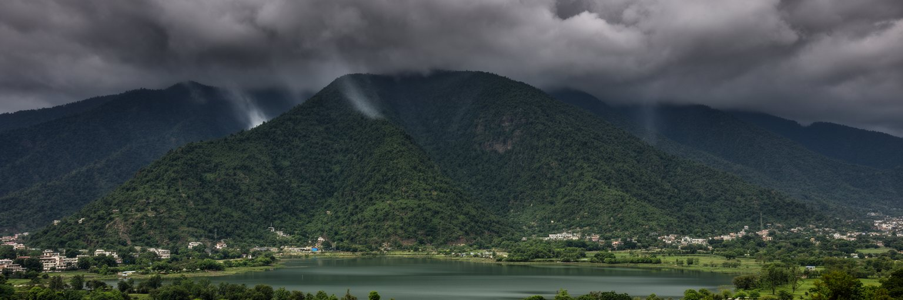
イスラマバードの魅力は、都市のすぐ背後にマルガラ丘陵が立ち上がることです。丘陵は国立公園として生物多様性、涼しさ、散策、都市景観を支え、ラーワル湖や緑地は首都の余暇と水環境に関わります。けれども自然は美しい背景であるだけではありません。夏の暑さ、モンスーンの強雨、鉄砲水、斜面の浸食、森林火災、大気汚染、廃棄物、野生動物との距離は、都市の安全と生活に直結します。パキスタン全体は洪水、熱波、水不足に脆弱で、首都も例外ではありません。広い道路と低密度の開発は熱を逃がす余地を持つ一方、車依存や郊外拡大は環境負荷を増やします。丘陵への観光客が増えれば、ごみ、駐車、踏み荒らし、火災リスクも高まります。気候適応は大規模な施設だけでなく、雨水排水、斜面管理、日陰の歩道、公共交通、節水、湖の水質、早期警報、学校や市場の暑さ対策として進みます。雨の前には土と葉の匂いが強まり、モンスーンの後は道路の水音と渋滞が生活の速度を変えます。緑は首都のブランドですが、それを守るには行政の管理、住民の利用、観光のルールを組み合わせる必要があります。自然に近い計画首都であることは特権であり、同時に責任です。丘陵を壊さず都市が成長できるかが、これからの評価になります。雨季の水路や乾季の火災対策は、景観では目立たなくても都市の安全を支える基礎です。
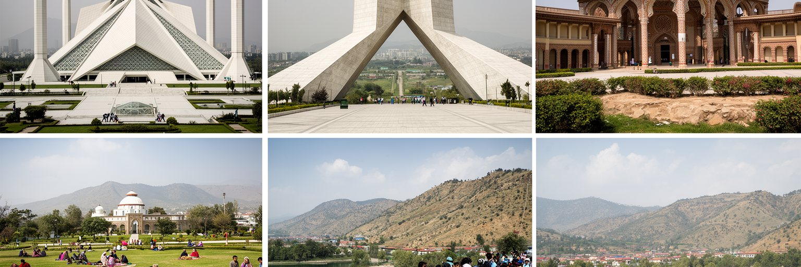
イスラマバードの観光は、古い城郭都市を歩く旅とは異なり、国家の物語と自然を組み合わせて読む旅です。ファイサル・モスク、パキスタン記念碑、ロク・ヴィルサ博物館、国立美術館、シャカルパリアン、ダーマン・エ・コー、ラーワル湖を巡ると、宗教、国家統合、民俗文化、現代政治、丘陵景観が一つの首都に集められていることが分かります。ロク・ヴィルサの展示や文化行事は、パンジャーブ、シンド、バローチスターン、カイバル・パクトゥンクワ、ギルギット・バルティスタン、カシミールの多様性を首都で見せる役割を持ちます。観光は政府が見せたい国家像を反映しますが、同時に旅行者が日常の都市を読む入口にもなります。マーケットでのビリヤニやニハリ、学生の多いカフェ、丘陵への週末散歩、モスク周辺の家族連れ、ラーワルピンディーへの移動を組み合わせると、整った首都の背後にある生活圏が見えます。観光には安全確認、宗教施設でのふるまい、写真撮影の配慮、暑さ対策が必要です。魅力は、派手な雑踏ではなく、国の象徴、緑、教育施設、隣接都市の生活を短い距離で比較できる点にあります。夜の音楽イベントや結婚式の車列、クリケット中継に沸く店先まで見れば、首都の余暇は記念碑だけでは終わりません。案内人や小さな食堂、博物館に時間を使うほど、首都観光は記念写真から都市理解へ深まります。
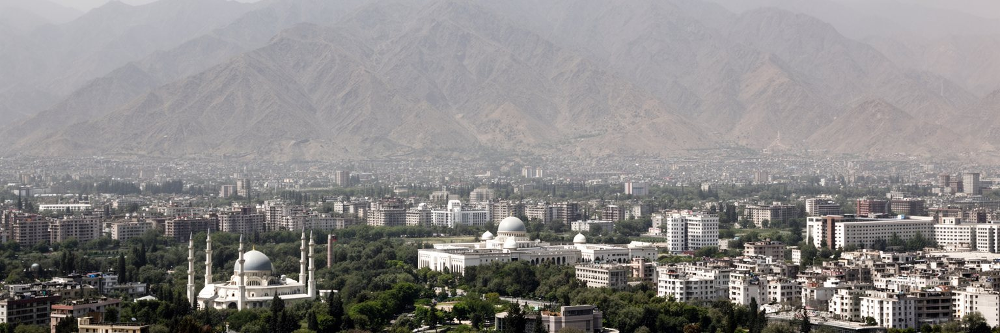
イスラマバードは、人口や経済規模だけで見れば、カラチやラホールほどの巨大な重みを持つ都市ではありません。しかし世界都市地図の中では、パキスタンという核保有国、若い人口を抱える大国、南アジアと中央アジアの接点を理解するために欠かせない首都です。マルガラ丘陵、ファイサル・モスク、官庁街、大使館地区、大学、住宅セクター、メトロバス、隣接するラーワルピンディーを一緒に見ると、国家の理想と社会の現実が同じ都市圏に並んでいることが分かります。緑豊かで整った景観は、首都の誇りであり、管理された空間の象徴でもあります。一方で、住宅格差、非公式集落、若者の雇用、政治的な抗議、治安、気候リスク、周辺都市への負担は、静かな表情の下に残ります。イスラマバードを読む時は、きれいな道路や記念碑だけでなく、そこへ通う労働者、学生、信徒、外交官、警備員、地方出身の家族を見る必要があります。計画首都は完成した作品ではなく、国の制度が生活とぶつかりながら更新される場所です。山麓の涼しい空気の中で、パキスタンの政治、信仰、教育、外交、都市格差が同時に見えることこそ、この都市の重要性です。静けさを豊かさだけと見ず、管理、距離、期待、不安が作る首都の表情として読むことが大切です。整った首都の輪郭と、そこへ流れ込む複雑な社会を重ねて見ると、イスラマバードは単なる行政都市ではなく、国の矛盾を引き受ける舞台になります。